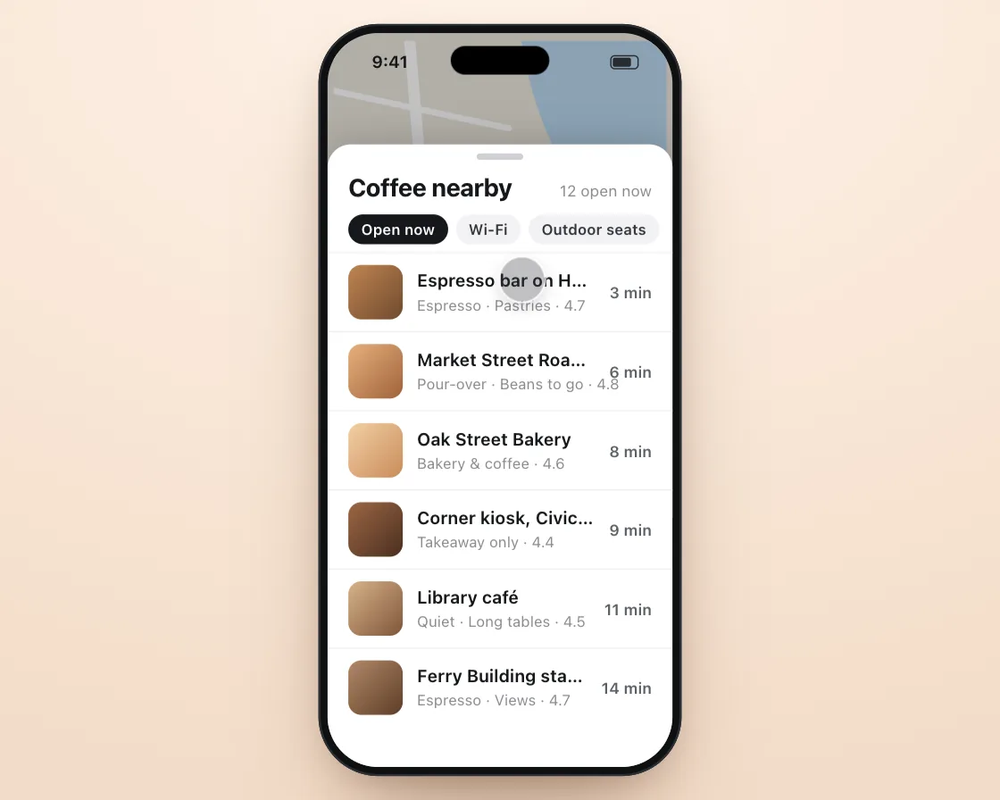

Snap-point bottom sheet
Snap-point bottom sheet is a DOM effect: aim with the throw, then spring to the nearest snap point. One plain JavaScript file with no dependencies; add it with npx motion-library add bottom-sheet.

Open it live, tune it and copy the code
What is Snap-point bottom sheet?
A maps sheet of nearby cafés is flung between peek, half and full height.
How does Snap-point bottom sheet work?
On release it adds a short look-ahead of its velocity to its position, picks the nearest snap point and springs there with that speed; past the ends it rubber-bands.
How do I add Snap-point bottom sheet to my website?
- In your project folder, run
npx motion-library add bottom-sheet. It writesanimations/bottom-sheet.js. Needs Node 18 or newer. - Import it and call it with a container element that has a size:
import fx from './animations/bottom-sheet.js'; const stop = fx(document.querySelector('#hero')); - Call
stop()to clean up, for example when a component unmounts.
Every setting below is also a flag, so you can install it already tuned: npx motion-library add bottom-sheet --stiffness 900.
What settings can I tweak?
| Setting | Flag | Default | Range | Step |
|---|---|---|---|---|
| Stiffness | --stiffness | 380 | 100 to 900 | 10 |
| Bounce | --bounce | 0.15 | 0 to 0.4 | 0.01 |
Specifications
- Renderer
- DOM (CSS and the Web Animations API)
- Category
- Springs & physics
- Dependencies
- None
- File size
- 11.1 KB, unminified
- Interactive
- Yes: it responds to the pointer
- Reduced motion
- Respects prefers-reduced-motion
- Licence
- MIT-0: use it anywhere, no credit needed
Source code
// Bottom sheet: in a maps app, a sheet of nearby cafés rests at three snap points (peek, half, full). A finger flings it up and down between them.
// On release the sheet looks where your throw was heading (position + velocity × a short look-ahead), picks the nearest snap point and springs there carrying the throw's speed, so a flick travels farther than a slow drag. Past the top and bottom it rubber-bands.
const PARAMS = { stiffness: 380, bounce: 0.15 };
export default function (stage) {
const reduce = matchMedia('(prefers-reduced-motion: reduce)').matches;
const K = 'bsh', BG = 'radial-gradient(120% 100% at 50% 0%,#fff3e8,#f3dcc8)', SC = '#ebe6dc', SBC = '#15171a';
const row = (n, s, d, c) => `<div class="bsh-row"><span class="bsh-th" style="background:${c}"></span><span class="bsh-tx"><b>${n}</b><small>${s}</small></span><span class="bsh-d">${d}</span></div>`;
const CSS = `.bsh-map{position:absolute;inset:0;transform-origin:50% 30%}.bsh-map svg{width:100%;height:100%;display:block}
.bsh-dim{position:absolute;inset:0;background:#000;opacity:0;pointer-events:none}
.bsh-pin{position:absolute;width:26px;height:26px;margin:-26px 0 0 -13px;border-radius:50% 50% 50% 0;transform:rotate(-45deg);background:#d9601a;box-shadow:0 3px 8px rgba(0,0,0,.25)}.bsh-pin:after{content:"";position:absolute;inset:8px;border-radius:50%;background:#fff}
.bsh-me{position:absolute;left:120px;top:250px;width:14px;height:14px;border-radius:50%;background:#2b74c9;box-shadow:0 0 0 3px #fff,0 0 0 14px rgba(43,116,201,.18)}
.bsh-sheet{position:absolute;left:0;right:0;top:0;height:640px;background:#fff;border-radius:18px 18px 0 0;box-shadow:0 -6px 24px rgba(0,0,0,.14);will-change:transform;z-index:5}
.bsh-grab{width:36px;height:5px;border-radius:3px;background:#d0d0d5;margin:7px auto 10px}
.bsh-h{display:flex;justify-content:space-between;align-items:baseline;padding:0 16px}.bsh-h b{font-size:19px;font-weight:720;letter-spacing:-.01em}.bsh-h span{font-size:12px;color:#8a8a8f}
.bsh-chips{display:flex;gap:6px;padding:10px 16px 6px}.bsh-chips span{font-size:11.5px;font-weight:600;padding:5px 10px;border-radius:99px;background:#f2f2f5;color:#33373c;white-space:nowrap}.bsh-chips span:first-child{background:#15171a;color:#fff}
.bsh-row{display:flex;align-items:center;gap:11px;padding:9px 16px;border-top:1px solid #f0f0f2}.bsh-row:first-of-type{border:0}
.bsh-th{width:42px;height:42px;border-radius:10px;flex:none}.bsh-tx{flex:1;min-width:0}.bsh-tx b{display:block;white-space:nowrap;overflow:hidden;text-overflow:ellipsis;font-size:13.5px;font-weight:620}.bsh-tx small{white-space:nowrap;font-size:11.5px;color:#8a8a8f}.bsh-d{font-size:12px;font-weight:600;color:#5b6066}`;
const HTML = `<div class="bsh-map"><svg viewBox="0 0 266 566"><rect width="266" height="566" fill="#ebe6dc"/><path d="M150 0 C 170 120 230 160 266 170 V 0z" fill="#b9d7ee"/><rect x="18" y="330" width="90" height="70" rx="8" fill="#cfe3c2"/>
<g stroke="#fff" stroke-linecap="round" fill="none"><path d="M-10 120 L 280 210" stroke-width="11"/><path d="M60 -10 L 110 580" stroke-width="9"/><path d="M-10 290 L 280 260" stroke-width="7"/><path d="M190 200 L 230 580" stroke-width="7"/><path d="M-10 450 L 280 420" stroke-width="6"/><path d="M0 40 L 140 70" stroke-width="5"/></g>
<g fill="#9aa0a6" font-size="8" font-family="system-ui"><text x="160" y="226" transform="rotate(17 160 226)">Market St</text><text x="30" y="300" transform="rotate(-6 30 300)">Hayes St</text></g></svg>
<span class="bsh-pin" style="left:84px;top:200px"></span><span class="bsh-pin" style="left:176px;top:280px"></span><span class="bsh-pin" style="left:206px;top:410px"></span><span class="bsh-me"></span></div><div class="bsh-dim"></div>
<div class="bsh-sheet"><div class="bsh-grab"></div><div class="bsh-h"><b>Coffee nearby</b><span>12 open now</span></div><div class="bsh-chips"><span>Open now</span><span>Wi-Fi</span><span>Outdoor seats</span></div>
${row('Espresso bar on Hayes', 'Espresso · Pastries · 4.7', '3 min', 'linear-gradient(135deg,#c08552,#6f4a2e)')}${row('Market Street Roastery', 'Pour-over · Beans to go · 4.8', '6 min', 'linear-gradient(135deg,#e6b17e,#a0623a)')}
${row('Oak Street Bakery', 'Bakery & coffee · 4.6', '8 min', 'linear-gradient(135deg,#f2d0a4,#c98b5a)')}${row('Corner kiosk, Civic Center', 'Takeaway only · 4.4', '9 min', 'linear-gradient(135deg,#9c6644,#4a2f20)')}
${row('Library café', 'Quiet · Long tables · 4.5', '11 min', 'linear-gradient(135deg,#d8b38a,#7f5539)')}${row('Ferry Building stand', 'Espresso · Views · 4.7', '14 min', 'linear-gradient(135deg,#b08968,#5e3d27)')}</div>`;
// ── phone shell: a 280 × 580 phone drawn in CSS, scaled to fit the stage (screen is 266 × 566)
const root = document.createElement('div');
root.className = K + '-root';
root.innerHTML = `<style>
.${K}-root{position:absolute;inset:0;overflow:hidden;background:${BG};font-family:system-ui,-apple-system,"Segoe UI",sans-serif;color:#15171a;user-select:none;-webkit-user-select:none}
.${K}-ph{position:absolute;left:50%;top:0;width:280px;height:580px;border-radius:46px;background:#0f1113;box-shadow:inset 0 0 0 1.5px #2b2f34,0 40px 80px -30px rgba(70,30,5,.45),0 12px 30px -12px rgba(70,30,5,.3);transform-origin:50% 0}
.${K}-sc{position:absolute;inset:7px;border-radius:39px;overflow:hidden;background:${SC};isolation:isolate;touch-action:none}
.${K}-is{position:absolute;left:50%;top:17px;width:76px;height:22px;margin-left:-38px;border-radius:12px;background:#000;z-index:30}
.${K}-sb{position:absolute;left:0;right:0;top:0;height:44px;padding:0 26px 0 34px;display:flex;align-items:center;justify-content:space-between;font-size:13px;font-weight:650;z-index:29;pointer-events:none;color:${SBC}}
.${K}-sb i{width:22px;height:11px;border-radius:3.5px;border:1.2px solid currentColor;box-sizing:border-box;padding:1px;opacity:.85}.${K}-sb i:after{content:"";display:block;height:100%;width:78%;background:currentColor;border-radius:1.5px}
.${K}-f{position:absolute;left:0;top:0;width:34px;height:34px;margin:-17px 0 0 -17px;border-radius:50%;background:rgba(60,60,67,.32);box-shadow:0 0 0 1.5px rgba(255,255,255,.85),0 4px 12px rgba(0,0,0,.18);z-index:40;pointer-events:none;opacity:0;transition:opacity .2s}
${CSS}
</style><div class="${K}-ph"><div class="${K}-sc"><div class="${K}-sb"><span>9:41</span><i></i></div>${HTML}<div class="${K}-f"></div></div><div class="${K}-is"></div></div>`;
stage.append(root);
const $ = s => root.querySelector('.' + K + '-' + s), $$ = s => [...root.querySelectorAll('.' + K + '-' + s)];
const phone = $('ph'), scr = $('sc'), fingerEl = $('f');
let scale = 1;
const fit = () => { const W = stage.clientWidth, H = stage.clientHeight; scale = Math.min(H * 0.94 / 580, W * 0.9 / 280); phone.style.transform = `translate(-50%, ${(H - 580 * scale) / 2}px) scale(${scale})`; };
const ro = new ResizeObserver(fit); ro.observe(stage); fit();
const finger = (x, y, on, press) => { fingerEl.style.opacity = on ? 1 : 0; fingerEl.style.transform = `translate(${x}px,${y}px) scale(${press ? 0.84 : 1})`; };
// a damped spring step (semi-implicit Euler, 4 substeps), which settles instantly under reduced motion, and Apple's rubber-band curve
const spring = (s, to, k, c, dt) => { if (reduce) { s.x = to; s.v = 0; return; } for (let i = 0; i < 4; i++) { const h = dt / 4; s.v += (-k * (s.x - to) - c * s.v) * h; s.x += s.v * h; } };
const rubber = (o, d, c) => o * d * c / (d + c * Math.abs(o));
// the simulated finger: keys are [ms, x, y, state(0 hidden, 1 hover, 2 pressed), linear?]; real touches take over for 2.5 s
const track = (keys, t) => { let i = 0; while (i < keys.length - 2 && t >= keys[i + 1][0]) i++; const a = keys[i], b = keys[i + 1]; let u = Math.min(1, Math.max(0, (t - a[0]) / ((b[0] - a[0]) || 1))); if (!a[4]) u = u < .5 ? 4 * u * u * u : 1 - Math.pow(-2 * u + 2, 3) / 2; return [a[1] + (b[1] - a[1]) * u, a[2] + (b[2] - a[2]) * u, a[3]]; };
const U = { on: false, x: 0, y: 0, last: -1e9 };
const toLocal = e => { const r = scr.getBoundingClientRect(); return [(e.clientX - r.left) / scale, (e.clientY - r.top) / scale]; };
const pd = e => { U.on = true; [U.x, U.y] = toLocal(e); U.last = performance.now(); try { scr.setPointerCapture(e.pointerId); } catch (_) {} };
const pm = e => { if (!U.on) return; [U.x, U.y] = toLocal(e); U.last = performance.now(); };
const pu = () => { if (U.on) { U.on = false; U.last = performance.now(); } };
scr.addEventListener('pointerdown', pd); scr.addEventListener('pointermove', pm); scr.addEventListener('pointerup', pu); scr.addEventListener('pointercancel', pu);
const unlisten = () => { scr.removeEventListener('pointerdown', pd); scr.removeEventListener('pointermove', pm); scr.removeEventListener('pointerup', pu); scr.removeEventListener('pointercancel', pu); };
let T0 = performance.now(), wasUser = false;
const input = (now, keys, loop) => {
if (now - U.last < 2500) { wasUser = true; finger(0, 0, false); return { x: U.x, y: U.y, down: U.on, t: -1, n: 0 }; }
if (wasUser) { wasUser = false; T0 = now; }
const t = (now - T0) % loop, [x, y, st] = track(keys, t);
finger(x, y, st > 0, st === 2);
return { x, y, down: st === 2, t, n: Math.floor((now - T0) / loop) };
};
const sheet = $('sheet'), map = $('map'), dim = $('dim');
const SNAP = [446, 290, 56], s = { x: 446, v: 0 };
// ghost finger: fling peek → half, half → full, then drag down and flick to peek
const keys = [[0, 150, 500, 0], [500, 150, 480, 1], [700, 150, 480, 2], [720, 150, 480, 2, 1], [940, 150, 362, 1], [1150, 150, 362, 0],
[2300, 150, 318, 0], [2500, 150, 318, 1], [2700, 150, 318, 2], [2720, 150, 318, 2, 1], [2920, 150, 190, 1], [3150, 150, 190, 0],
[4500, 140, 90, 0], [4700, 140, 90, 1], [4900, 140, 90, 2], [5600, 140, 240, 2], [5620, 140, 240, 2, 1], [5780, 140, 360, 1], [6000, 140, 360, 0], [8200, 150, 500, 0]];
let grab = null, vel = 0, lastY = 0, last = performance.now(), raf;
function frame(now) {
const dt = Math.min(0.032, (now - last) / 1000); last = now;
const f = input(now, keys, 8200);
if (f.down) {
if (!grab) { grab = { y0: f.y, s0: s.x }; lastY = f.y; vel = 0; }
vel = vel * 0.6 + ((f.y - lastY) / Math.max(dt, 0.001)) * 0.4; lastY = f.y;
const raw = grab.s0 + f.y - grab.y0;
s.x = reduce ? Math.max(SNAP[2], Math.min(SNAP[0], raw)) : raw < SNAP[2] ? SNAP[2] - rubber(SNAP[2] - raw, 566, 0.55) : raw > SNAP[0] ? SNAP[0] + rubber(raw - SNAP[0], 566, 0.55) : raw; s.v = vel; // reduced motion: stop at the ends, no rubber-band
} else {
if (grab) { grab = null; const aim = s.x + s.v * 0.2; s.to = SNAP.reduce((a, b) => Math.abs(b - aim) < Math.abs(a - aim) ? b : a); }
if (f.t >= 0 && f.t < 100 && f.n > 0 && s.to !== SNAP[0]) s.to = SNAP[0];
const k = PARAMS.stiffness, c = 2 * Math.sqrt(k) * (1 - PARAMS.bounce);
spring(s, s.to ?? SNAP[0], k, c, dt);
}
const open = Math.max(0, Math.min(1, (SNAP[1] - s.x) / (SNAP[1] - SNAP[2])));
sheet.style.transform = `translateY(${s.x}px)`;
dim.style.opacity = open * 0.28; map.style.transform = `scale(${1 - open * 0.04})`;
raf = requestAnimationFrame(frame);
}
raf = requestAnimationFrame(frame);
return () => { cancelAnimationFrame(raf); ro.disconnect(); unlisten(); root.remove(); };
}